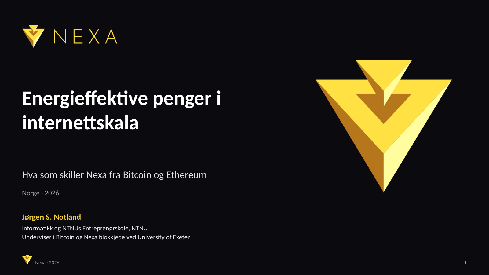

← → for å bla · N viser notater · F for fullskjerm
Talenotater
Presenter deg kort: informatikk og NTNUs Entreprenørskole i Trondheim, og at du underviser i Bitcoin og Nexa blokkjede ved University of Exeter. For dette publikummet betyr NTNU-koblingen noe: miljøforskningen på slide 6 kommer fra ditt eget universitet. Åpning. Presentasjonen er skrevet for et skeptisk publikum. Den første innholdssliden innrømmer kritikken før den besvares. Kilder for hvert tall ligger i notatene til hver slide.